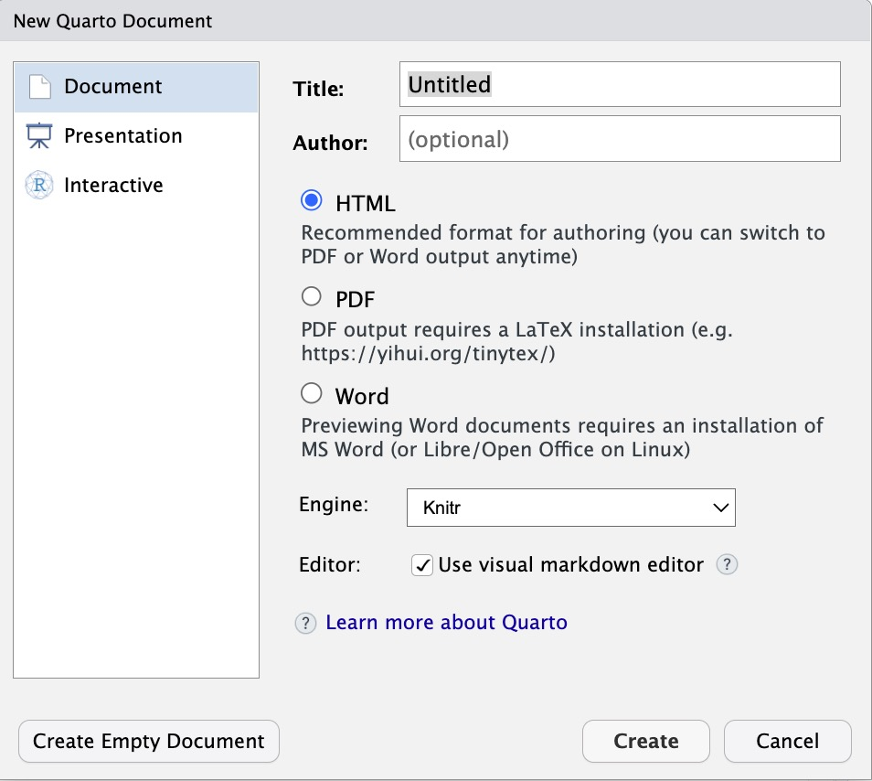
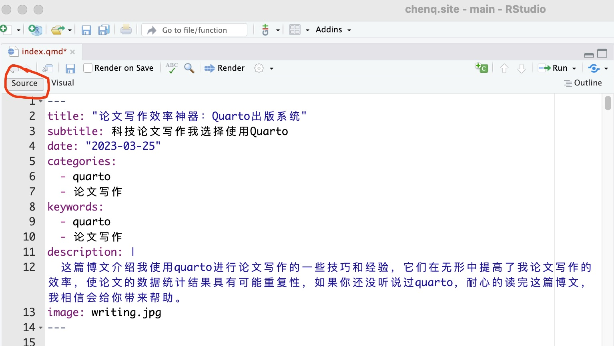
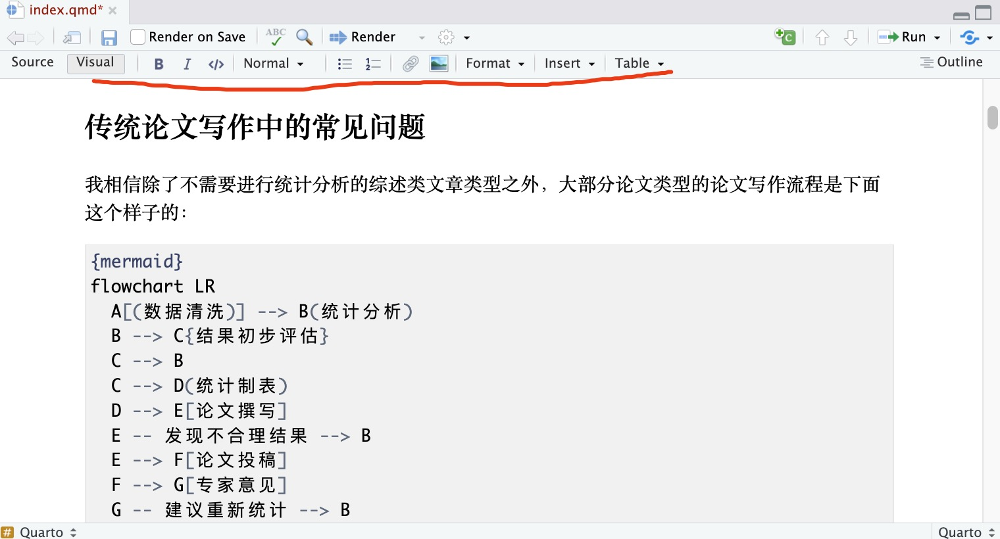
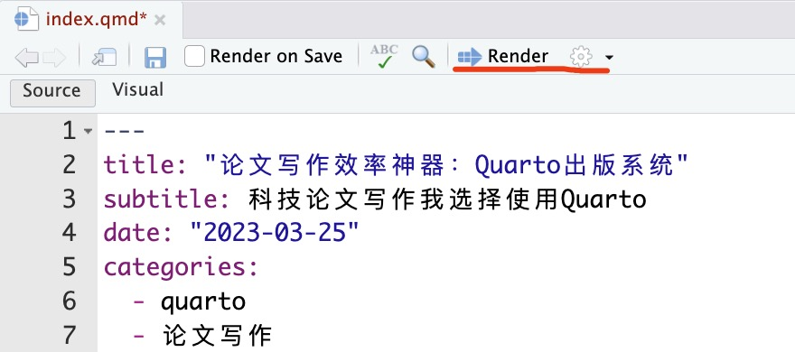

flowchart TD
A[(数据清洗)] --> B(统计分析)
B --> C{结果初步评估}
C --> B
C --> D(统计制表)
D --> E[论文撰写]
E -- 发现不合理结果 --> B
E --> F[论文投稿]
F --> G[专家意见]
G -- 建议重新统计 --> B
G -- 不需要重新统计 --> E
G --> H[发表见刊]
1 传统论文写作中的常见问题
我相信除了不需要进行统计分析的综述类文章类型之外，大部分论文类型的论文写作流程是下面 Figure 1 这个样子的：
什么是传统科技论文写作？
我想你在进行科技论文写作的过程中，数据分析和结果展现是割裂的过程，需要在不同的文字编辑软件里手动调整格式(比如参考文献的标注和更新、图表的交叉引用和更新、段落格式的设定等)，那么我觉这些都属于传统科技论文的写作。
在执行上面流程的过程中可能在论文写作及发表过程中出现很多问题，我们在各个环节都可能发现我们论文结果中存在或这或那的问题，这个是非常正常的，也是一个必然的过程，我们需要在这个过程中不断打磨数据的统计结果，使之更有说服力，更能真实展现研究的主要结果。
但是如果需要重新进行统计分析的问题在论文撰写的时候被发现或者在专家审稿的时候被发现，那意味着后面统计制表、论文撰写中相关的数据均需要更新，如果你还是在word里以复制粘贴的方式从统计软件里往word进行结果输出的话，可以想像，这个过程必定的非常痛苦的。
- 需要付出大量时间进行复制粘贴这样没有意义的事
- 重复操作的过程中可能会出现偶尔的数据错误
2 Quarto开源科学技术出版系统介绍
Quarto可以解决上面出现的问题，能把数据分析的过程融合进论文写作的过程中来，以markdown的格式进行文字编辑和创作，通过插入代码段的形式进行统计分析相关的输出，同时它可以实现参考文献的插入和应用、图表的交叉引用；在报告输出方面，它可以输出成PDF、WORD、PPT、HTML、ePub等多种格式，可以用来制作网页、书籍、科技论文、幻灯片等内容。
Quarto
Quarto是一个基于Pandoc的开源科学和技术出版系统，是下一代的R markdown，它以.qmd为文件后缀，quarto把内容通过knitr转化为markdown，再通过Pandoc转化为各种指定的格式。

3 Quarto的主要特点
- 它主要用来生成不同格式的报告
- 能把R、Python、Julia和Observable等代码与文本报告整合起来，生成基于不同代码运行结果的动态报告
- 它基于markdown和pandoc进行内容的转换
- 它使用.qmd文件后缀，相对于Rmd在进行内容创作生成不同格式输出时具有统一的语法
- 它可以不依赖上面所说的软件独立运行，当你的内容创作不涉及的上面的软件时，那你只需要单独安装Quarto环境即可
- 可以与不同的代码编辑软件结合使用，Rstudio、Terminal、Vscode等
4 Quarto安装
如果你使用Rstudio的话，下载最新的版本，该版本内置有quarto。
如果你需要在R 代码进行文档渲染的话，可以安装R quarto包
如果你需要在Vscode或者终端中使用quarto的话，可以参考不同运行环境quarto的安装与配置，进行相应的配置，本篇博客将使用Rstudio进行相应的操作和介绍。
5 新建quarto文件
在Rstudio里，点击 File –> New Files –> Quarto Document 新建一个quarto文件，该文件以.qmd为文件后缀

6 Quarto语法介绍
6.1 YAML 信息设置
Quarto通过yaml设置一些变量信息，比如作者、日期、标题等，YAML以”---“单独一行开头，然后以”---“单独一行结尾，中间可以设置一些变量信息。
变量设定格式：
变量名: 变量值
输出格式也在YAML里面设置，设定输出格式的变量名为：format，变量值为：html、pdf、word等。
6.2 代码块
quarto文档中可以插入代码块，在代码块中可以进行编写相应语言的代码，进行统计分析或结果展现。目前quarto支持的代码块包括R语言、Python等，下面的R语言代码块，利用gtsummary包制作了论文中常用的表1，结果可见 Table 1 。
```{r}
#| label: tbl-table1
#| tbl-cap-location: top
#| tbl-cap: "接受不同药物治疗人群基本特征分析"
#| warning: false
#| message: false
library(gtsummary)
trial %>% select(age, grade, response, trt) %>%
tbl_summary(by=trt) %>%
add_p() %>%
add_overall() %>%
add_n() %>%
bold_labels()
```| Characteristic | N | Overall, N = 2001 | Drug A, N = 981 | Drug B, N = 1021 | p-value2 |
|---|---|---|---|---|---|
| Age | 189 | 47 (38, 57) | 46 (37, 59) | 48 (39, 56) | 0.7 |
| Unknown | 11 | 7 | 4 | ||
| Grade | 200 | 0.9 | |||
| I | 68 (34%) | 35 (36%) | 33 (32%) | ||
| II | 68 (34%) | 32 (33%) | 36 (35%) | ||
| III | 64 (32%) | 31 (32%) | 33 (32%) | ||
| Tumor Response | 193 | 61 (32%) | 28 (29%) | 33 (34%) | 0.5 |
| Unknown | 7 | 3 | 4 | ||
| 1 Median (IQR); n (%) | |||||
| 2 Wilcoxon rank sum test; Pearson's Chi-squared test | |||||
6.3 Markdown文本
Rstudio提供两种模式进行文本编辑，一种是source模式，quarto参考使用markdown的基本语法，比如一级标题使用”#“，二级标题使用”##“等，具体可见markdown基本语法。另一种是Visual模式，可见模式下，你不用学习许多markdown的基本语法，可以使用菜单或者快捷键进行添加标题、加粗文本、添加表格、添加图片等操作。
在Rstudio打开的qmd文档中，左上角可以选择source或者visual模式。
Source模式下是这样的 
Visual模式下是这样的 
7 输出Word格式
虽然quarto支持的输出格式很多，比如html格式、pdf格式以及word格式，你现在所浏览的网页就是用quarto来生成的。
回到我们今天讲的主题是“科技论文的写作效率”，我们撰写完成论文初稿后是需要进入投稿流程的，目前不同期刊所接受的投稿格式还是以word为多，下面就展开来讲一下quarto如何输出word格式。
7.1 利用word模板文件
在quarto文档的YAML部分，通过format设置为输出word格式，还可以设置word模板文件，输出结果会按照word模板的格式对各个部分进行设置。
YAML设置部分代码如下：
7.2 图表交叉引用的相关设置
通过crossref设置交叉引用图表的格式，fig-title设置的是图标题前显示字符，tbl-title设置表格标题前的显示字符，title-delim设置图表序号和显示字符之间的连接符号。
tbl-frefix设置在文本中引用时的显示格式：如表1、表2，图1、图2
7.3 设置参考文献引用格式
参考文献的引用时论文写作时候的一个大问题，我们在使用quarto进行科技论文写作的时候，需要在YAML里进行两个设置才能进行参考文献的引用和格式的设置。
- 通过 bibliography: 指定bibtex格式文献的存放位置
- 通过csl: 指定参考文献的引用格式
---
title: "河南省肿瘤登记地区恶性肿瘤2017-2019年期间5年相对生存率"
bibliography: survival17-19.bib
csl: "/Users/qc0824/zotero/styles/chinese-gb7714-2005-numeric.csl"
---在文本编辑时，通过[“@refid”]的形式进行参考文献的文内引用，如果同一位置引用多篇文献，[“@refid1;@refid2”]，可以在文献之间添加”;“。
7.4 设置作者列表和单位信息
在论文投稿时，需要在标题下方列出各位作者的信息，包括姓名，作者单位，通讯作者等，姓名上标标注作者的单位信息。
quarto里可以通过安装一个authors-block插件来实现。
7.4.0.1 安装方法
在qmd文档所在的quarto项目之下，在terminal运行如下命令：
8 渲染输出格式

在完成以上步骤之后，只需要点击上图标注的render按钮即可，然后一篇word格式的，随时可以进行投稿论文初稿就完成了。
如果你在撰写讨论部分的时候，发现统计的某个指标可能存在异常，那么我们只需要在相应的代码块里更新相应的统计代码，更新完成之后，再次点击render，那么你的统计表格就会跟着更新，再次生成基于新结果的论文初稿。
什么是render？
其实就是quarto运行的过程，通过kintr包把qmd转化为普通的markdown，在通过pandoc转化为word格式的过程。
如果你看完以上内容，有没有想试一试Quarto系统的冲动？本篇博客只是介绍了Quarto应用于论文写作方面，它还有其他很多的应用方式，比如做幻灯、写书稿等等，如果你还有一些闲暇时间，不妨来试试！